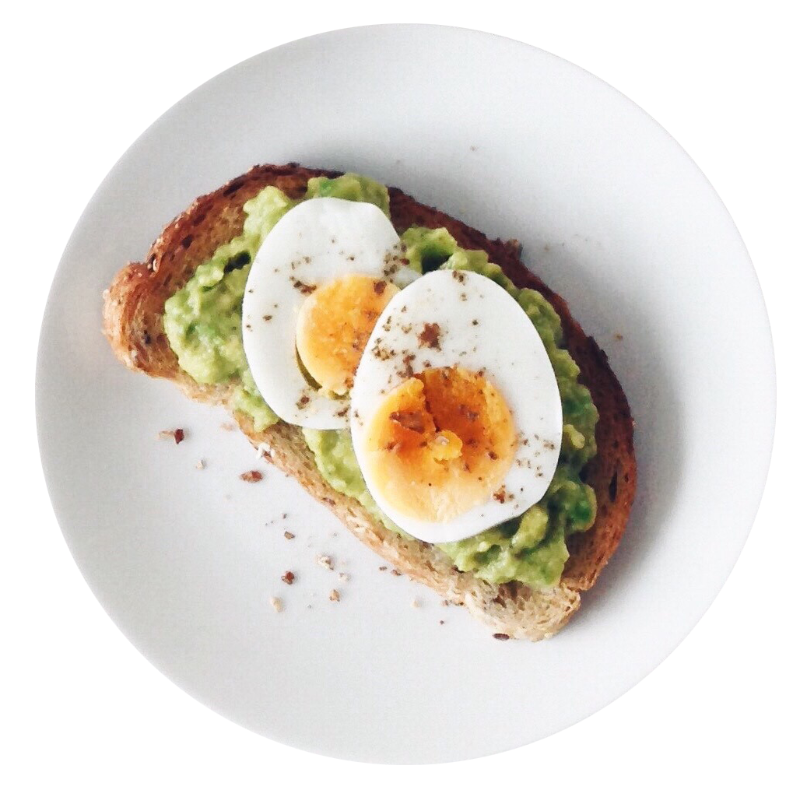

Project Overview
The Product
Bulla is a hypothetical application that seeks to offer its customers not only a wide variety of Spanish cuisine dishes but also a different experience when ordering a dish.
The Goal
The food menu app for a Spanish restaurant will let the user read and order a dish with detailed information. I will measure effectiveness by understanding users' needs, behaviors, and motivations.
The Problem
Food menus don't always offer enough information about each dish, customers can't add or remove ingredients, or customers do not know how much the bill will be. As a User Experience designer, the challenge was to make the app interactive, easy to navigate, provide nutrition & allergens information, and report in real-time the approximate cost of what is ordered.
Responsibilities
• Plan and conduct user research.
• Interpret data and qualitative feedback.
• Create user stories, personas, and storyboards.
• Determine information architecture and create sitemaps.
• Create wireframes and prototypes.
• Conduct usability testing.

Understanding the User
Summary
I interviewed five potential users between the ages of 25 and 65 in an online survey. These users often have trouble ordering dishes, such as identifying allergens. I sought to gather as much information as possible to understand the users' needs, behaviors, and motivations.
Pain Points
Not able to see the ingredients, nutrition facts, and allergens for each dish.
Not able to change or add ingredients to a dish.
Not able to see how much they are spending in real-time.
Personas
Goals
I want to see nutrition facts, allergens, chef recommendations and I want the ability to change or add ingredients.
Frustration
The order process is confused, no photos of dishes, not able to see the ingredients of the dishes. Not able to see how much I'm spending in real-time.
User Journey Map
| ACTION | OPEN THE APP | FIND THE MENU | SELECT A DISH | VERIFY ORDER | PLACE ORDER |
|---|---|---|---|---|---|
| TASK | A. Find menu button. | A. Read all different menus B. Select a menu. | A. Read nutritional information. B. Add or remove ingredients. | A. Verify color and price. | A. Verify color and price. B. Place order. |
| FEELING ADJECTIVE | Hungry | Hungry / Confused. | Satisfaction / Confused. | Excited | Excited / Overwhelm. |
| IMPROVEMENT OPPORTUNITIES | Make the button stand out. | More information / Language option. | Better wayfinding / Language option. | Make order stand out. | Better wayfinding / Clear information. |
Problem Statement
Adela is a Cardiologist at TGH who wants to check the dishes ingredients of the dishes she would like to order because of her health conditions.
If / Then Statement
If Adela can check, add, and remove ingredients, then she will be able to eat healthier.
Goal Statement
Our food menu app for a Spanish restaurant will let users read the menu and order food which will affect users who want detailed information about each dish by allowing to read nutrition, allergens, and be able to add or change ingredients and will measure effectiveness by tracking orders through the app.

Starting Design
Paper Wireframes
Taking time to draft iterations of each screen of the app on paper ensured that the elements that made it to digital wireframes would be well-suited to address user pain points. Stars were used to mark the elements of each sketch that would be used in the initial digital wireframes.
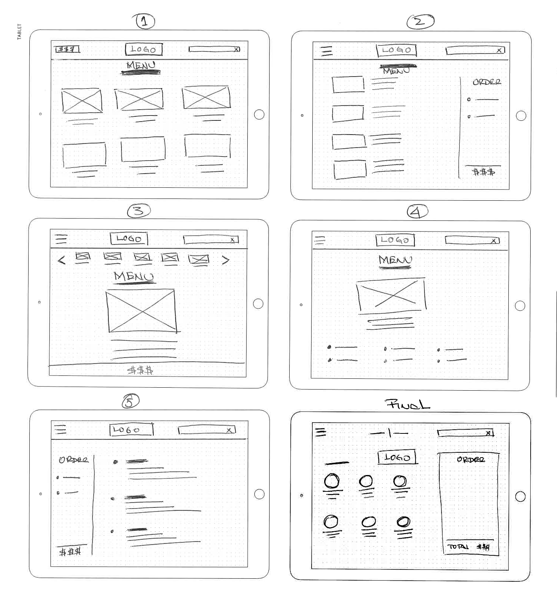
Digital Wireframes
As the initial design phase continued, I made sure to base screen designs on feedback and findings from the user research.
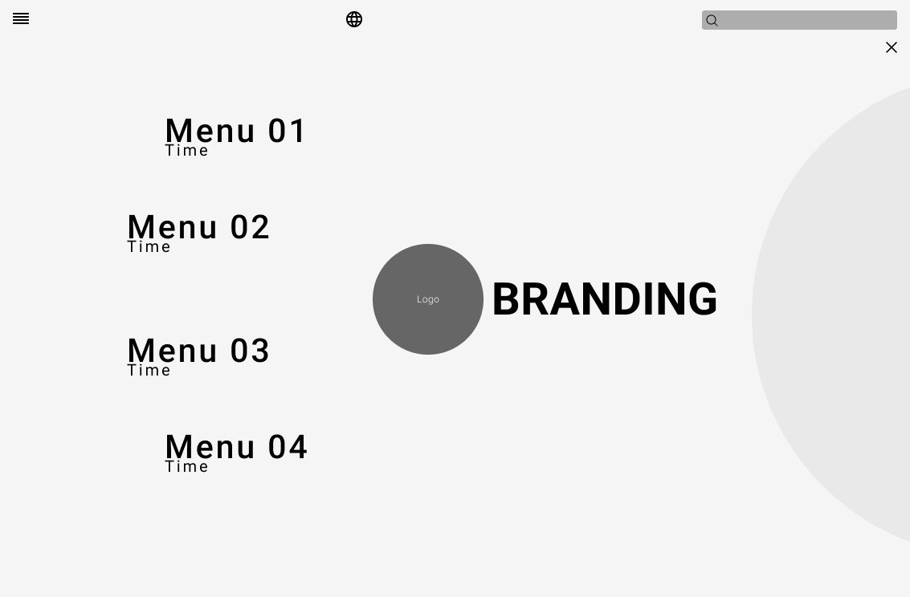
Organized Menu — easy access to the different menus
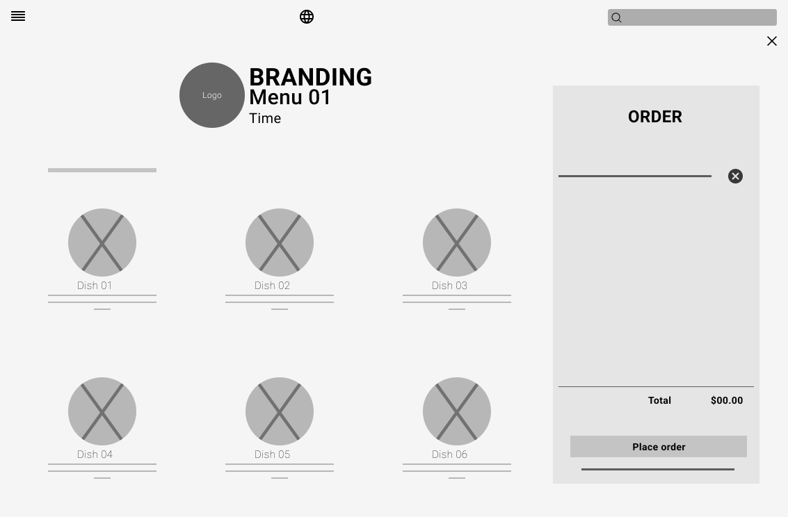
Virtual Check — Real-time spending
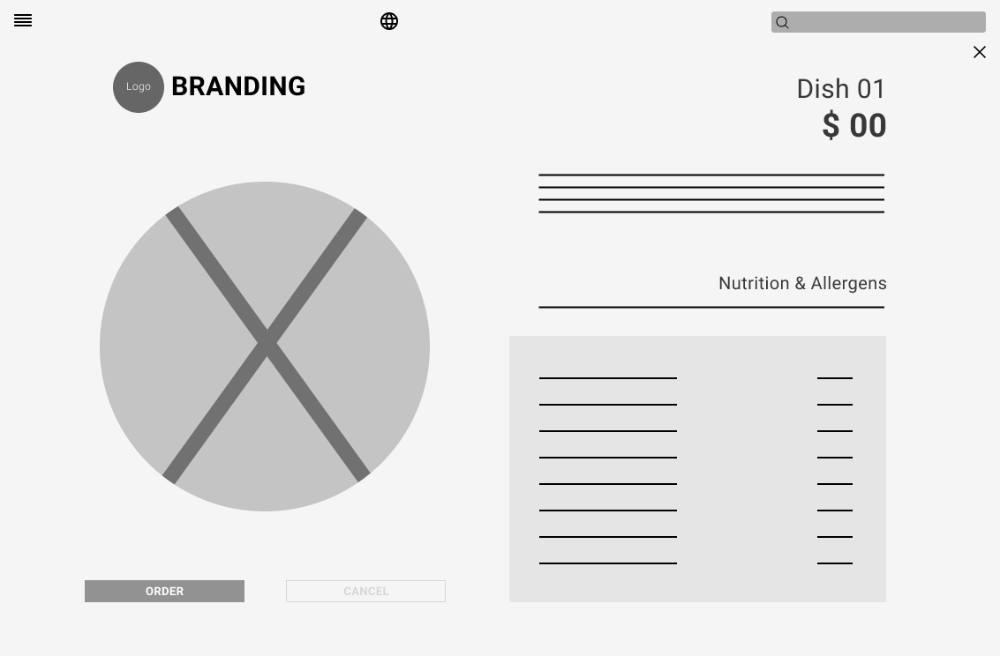
Ingredients & Nutrition Information — detailed info for each dish
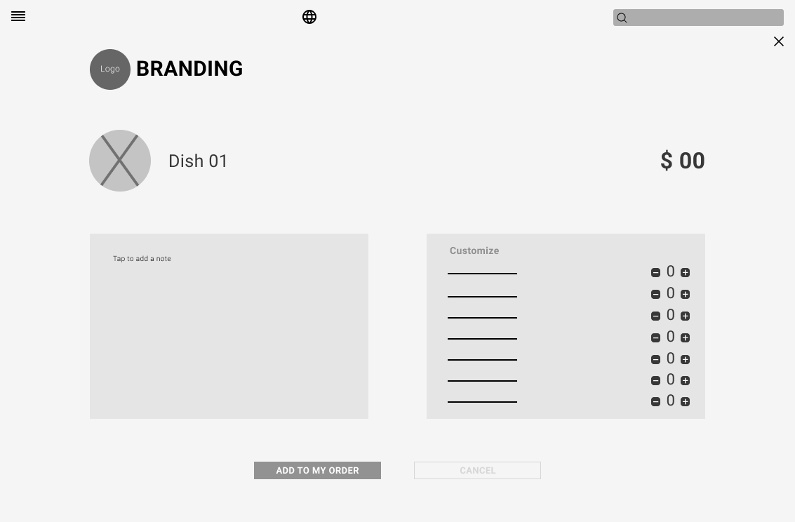
Dish Customization — add or remove ingredients
Low-Fidelity Prototype
In this phase, I created a prototype that a potential user will test. I'm looking for usability issues that might affect the user experience.
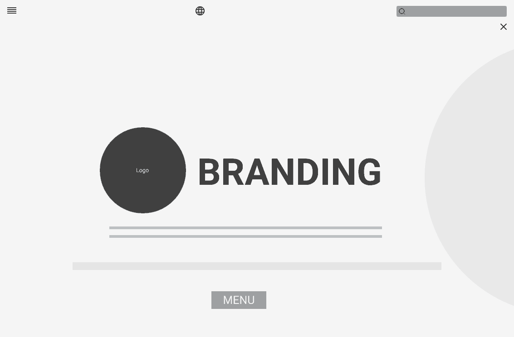
Usability Study
Usability testing was one of the most important parts of my design process. I conducted two rounds on five potential users through the Figma prototype. I tested the navigation structure, the wording of the interface, and the overall flow of the ordering experience.
Poor visibility.
Participant was confused about how to go to the main menu.
Easy to select a dish on the lunch menu.
Participant feels that is great to have the option to delete a dish from the order.
More confirmation windows.
Participant was confused about how to cancel the entire order.
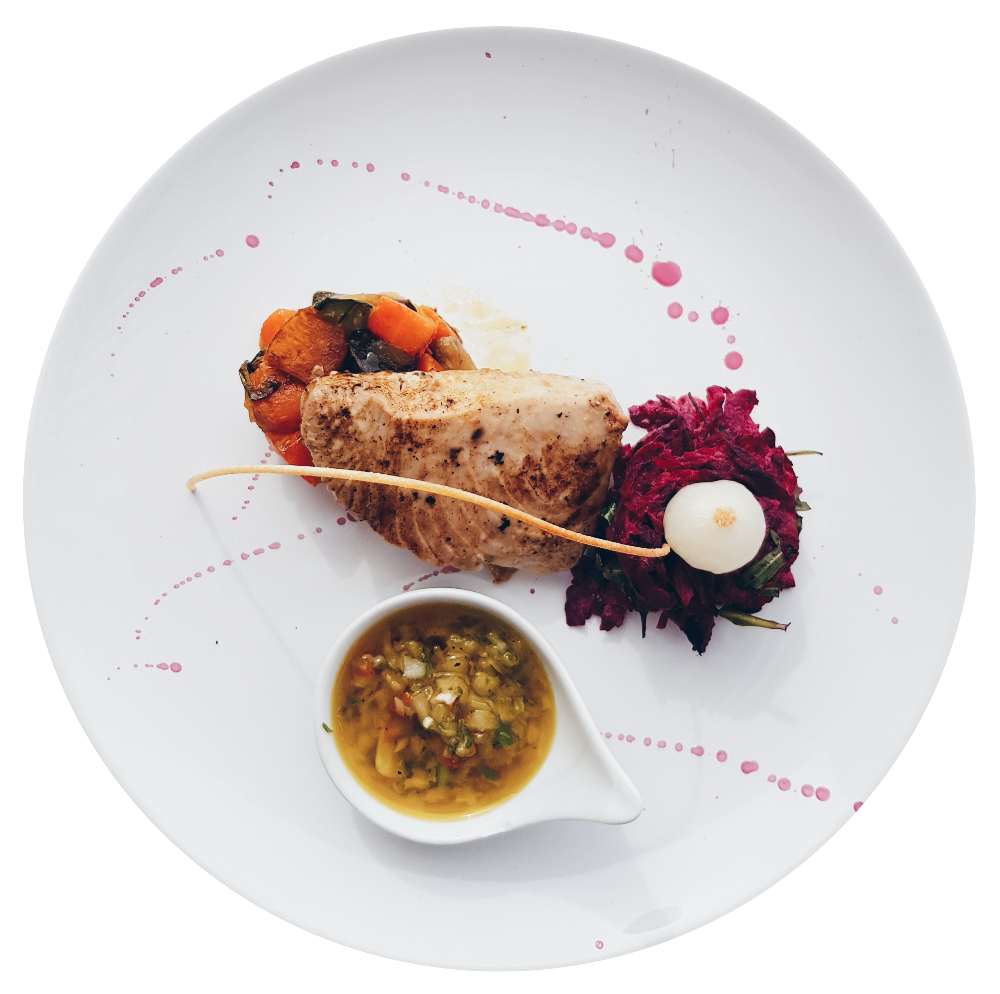
Refining the Design
Mockups
Early designs allowed for some customization, but after the usability studies, I made changes to improve the experience. Key improvements focused on language accessibility and order cost transparency.
Before: Language button was a small icon — hard to find and not intuitive for users.
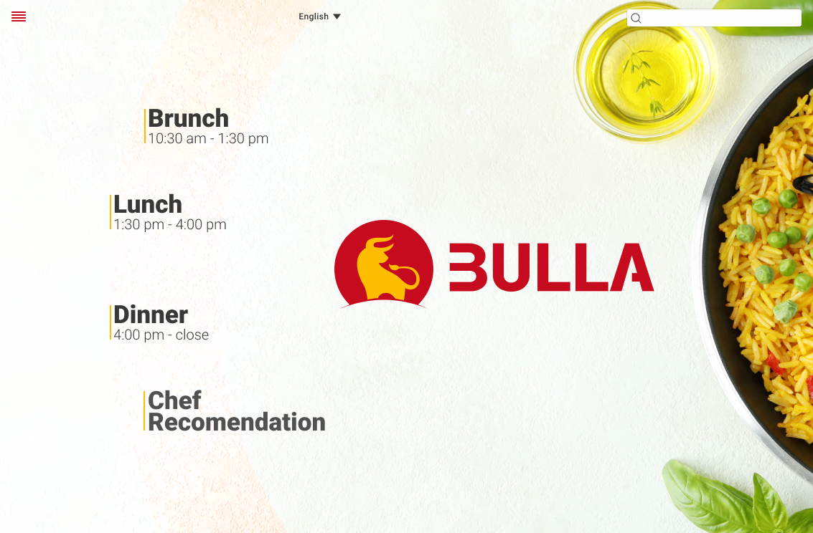
After: Language selector redesigned as a prominent button with clear label for improved accessibility.
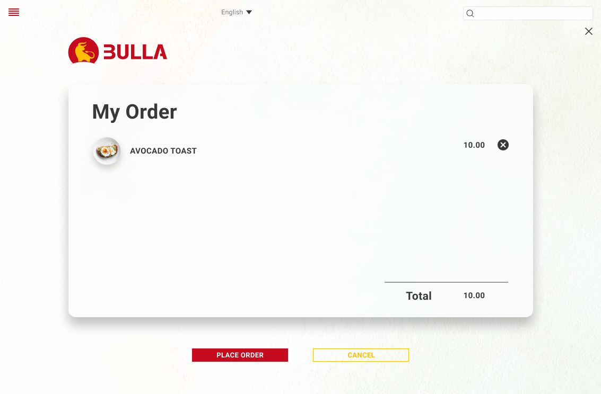
Before: Tax information was missing — users could not see the real total cost of their order.
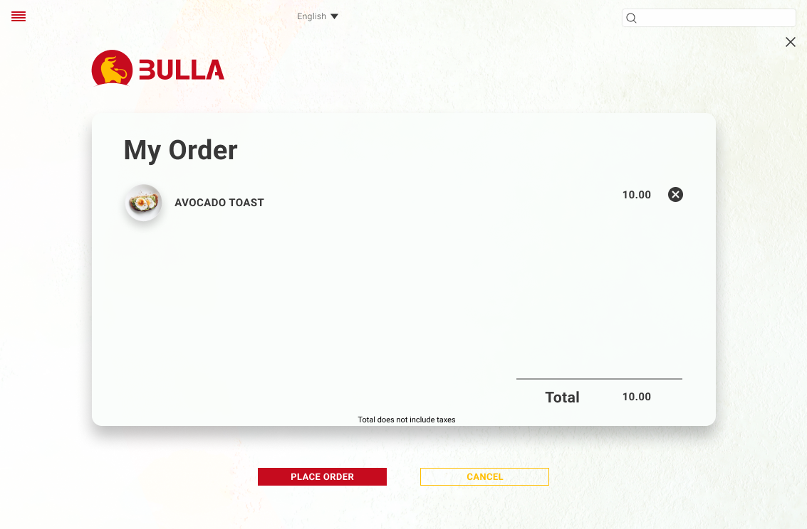
After: Tax breakdown added to the order summary screen so users always know what they're paying.
High-Fidelity Prototype
The final high-fidelity prototype presented cleaner user flows for ordering a dish, customizing ingredients, and tracking the real-time order cost.
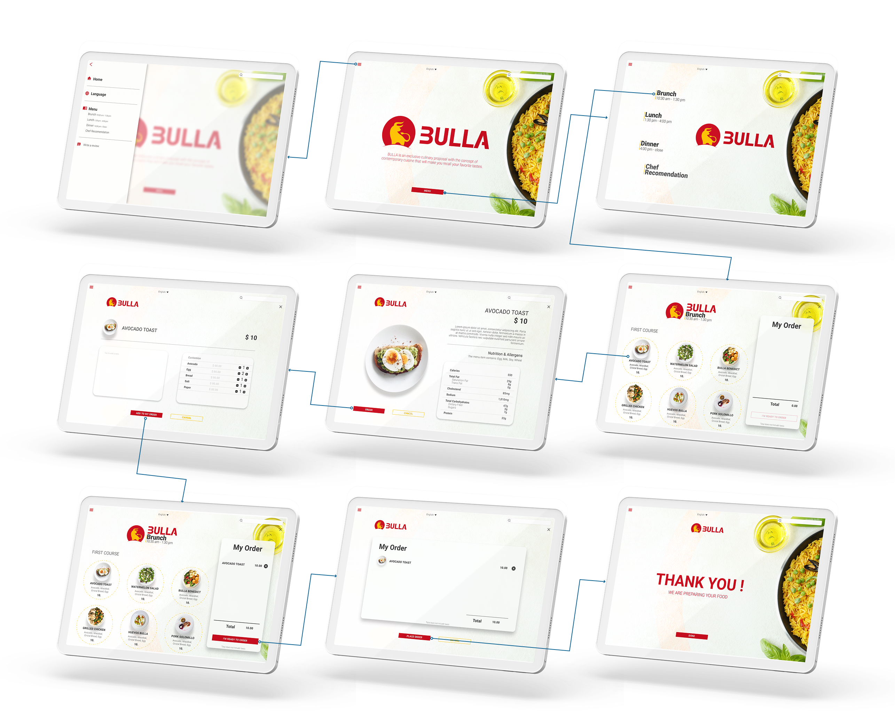
Typography
Color
Iconography
Usability Considerations
High Contrast Ratio
Used high-contrast color combinations to ensure that all text and UI elements are clearly readable for users with visual impairments.
Language
It is a crucial factor in ensuring the app is localized and achieving customers' needs by offering a multilingual experience.
Images
Images and readily recognizable icons are used across the design to provide visual context and make the ordering experience intuitive.

Going Forward
Impact
Users enjoy ordering their food from the menu app, but also the information and the fact of being able to make changes to their needs make the user experience more pleasant.
Quote from one of the research participants:
"THIS IS GREAT; I CAN ADD MORE INGREDIENTS AND MAKE A NOTE TO THE CHEF TO NOT USE SALT"
What I Learned
The needs of different users helped me understand the importance of design accessibility, offering as much information and interaction as possible.
After a series of interviews and usability studies, I discovered some flaws in my initial assumptions about users of the app. I learned that users need confirmation of any action before making the final decision and that interaction is a plus.
Next Steps
Thank you.